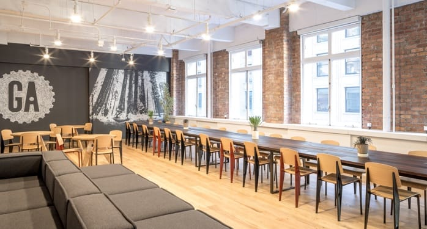

G.A. Press Release
GENERAL ASSEMBLY HONORED AT MIT INCLUSIVE INNOVATION COMPETITION
FOR IMMEDIATE RELEASE
10/27/16General Assembly has an ambitious vision for the future. We’re working toward a world in which we can close the global skills gap, ensuring that everyone — regardless of social or economic barriers — has access to the training they need to pursue a career they love. To achieve this goal, we work closely with employers to understand the workforce they need, and then empower students and employees with these skills.
Our commitment is getting noticed.
In September, MIT honored General Assembly as a finalist in its Inclusive Innovation Competition. The contest identifies and celebrates organizations that are inventing a more inclusive, productive, and sustainable future for all. Like us, they see the importance of a network of organizations learning from one another and working together to solve important social challenges.
ABOUT GENERAL ASSEMBLY
General Assembly, which started in New York as a startup incubator, now offers classes and workshops in technology, design, and entrepreneurship, with campuses around the world in:

For more information, visit General Assembly's website (http://generalassemb.ly)